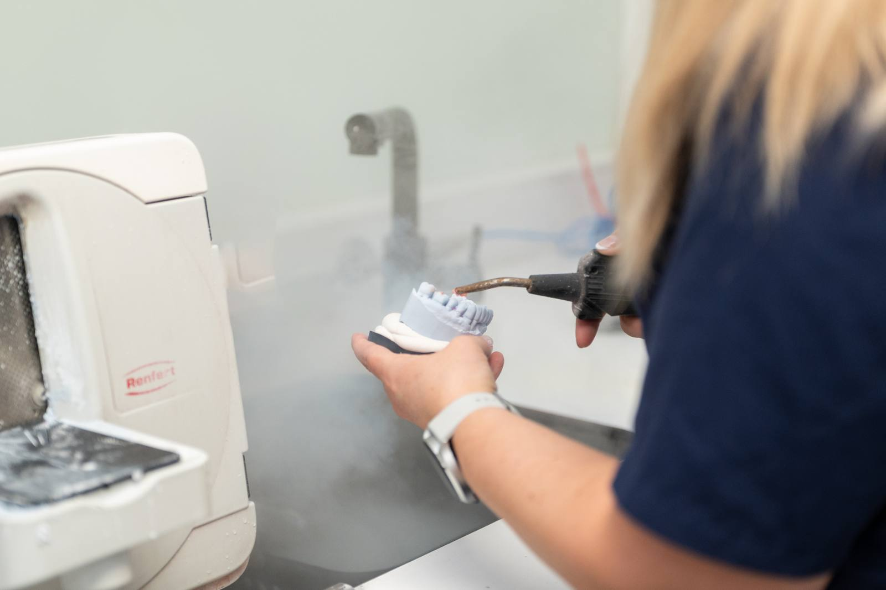

Startseite / Leistungen / Endodontie
Wurzelbehandlung in Düsseldorf & Kempen
Auch ein stark geschädigter Zahn muss nicht verloren sein: Mit einer Wurzelkanalbehandlung lässt sich der eigene Zahn in vielen Fällen dauerhaft erhalten.

Auch ein stark geschädigter Zahn muss nicht verloren sein: Mit einer Wurzelkanalbehandlung lässt sich der eigene Zahn in vielen Fällen dauerhaft erhalten.
Den eigenen Zahn erhalten, statt ihn zu ziehen – auch bei entzündetem Zahnnerv.
Dank örtlicher Betäubung verläuft die Behandlung schmerzfrei.
Bei erhaltungswürdigen Zähnen in der Regel Kassenleistung; moderne Zusatzverfahren ggf. mit Eigenanteil.
Die Endodontie ist das Fachgebiet der Zahnmedizin, das sich mit dem Zahninneren befasst – ihre wichtigste Behandlung ist die Wurzelkanalbehandlung. Im Inneren jedes Zahns liegt in feinen Kanälen das Zahnmark mit Nerven und Blutgefäßen. Dringen Bakterien durch tiefe Karies, einen Riss oder eine Verletzung dorthin vor, entzündet sich dieses Gewebe. Weil es im harten Zahn nicht anschwellen kann, entsteht Druck – daher die typischen, oft pochenden Schmerzen. Unbehandelt stirbt das Gewebe ab, und die Bakterien breiten sich über die Wurzelspitze in den Kieferknochen aus.
Bei der Wurzelkanalbehandlung wird das entzündete oder abgestorbene Gewebe entfernt, das Kanalsystem mechanisch aufbereitet, desinfizierend gespült und anschließend bakteriendicht gefüllt. Der Zahn bleibt so im Kiefer, statt gezogen werden zu müssen – die Alternative wäre die Entfernung mit anschließendem Ersatz durch Brücke oder Implantat. Wir arbeiten mit modernen, wissenschaftlich abgesicherten Verfahren; in der Salierpraxis ist die Endodontologie ein Schwerpunkt von Shirley Hendricks.
Nicht jeder Zahn ist erhaltungswürdig: Ist er längs gebrochen, steht zu wenig Substanz für eine stabile Versorgung zur Verfügung oder ist der Knochen weit abgebaut, kann die Entfernung die vernünftigere Entscheidung sein. Diese Einschätzung treffen wir nach Röntgenbefund und besprechen offen mit Ihnen, welche Aussichten der Zahn hat.

Salierpraxis Düsseldorf
Salierpraxis Kempen
Je früher behandelt wird, desto besser sind die Aussichten – selbst stark zerstörte Zähne lassen sich häufig noch erhalten. Ein wurzelbehandelter Zahn hat kein Zahnmark mehr und reagiert deshalb nicht mehr auf Kälte; er kann trotzdem an Karies erkranken und braucht dieselbe Pflege wie jeder andere Zahn. Weil er ohne Gewebe im Inneren spröder wird, ist eine Krone bei größeren Defekten sinnvoll. Nach der Behandlung kontrollieren wir den Heilungsverlauf, bei Bedarf mit einer weiteren Röntgenaufnahme.
Jede Behandlung wird individuell auf Ihren Befund abgestimmt.
Mit einer Röntgenaufnahme prüfen wir, ob und wie der Zahn erhalten werden kann. Ergänzend testen wir seine Reaktion auf Kälte und Druck, um festzustellen, ob das Zahnmark noch lebt.
Die Behandlung verläuft unter örtlicher Betäubung schmerzfrei. Bei stark entzündeten Zähnen setzen wir die Betäubung gezielt ein, damit sie auch dann zuverlässig wirkt.
Über eine kleine Öffnung in der Zahnkrone werden die Kanaleingänge aufgesucht und das entzündete oder abgestorbene Gewebe entfernt. Der Zahn wird dabei mit einem Spanngummi trocken und speichelfrei gehalten.
Die Kanäle werden mit feinen Instrumenten auf ihrer gesamten Länge aufbereitet, gespült und desinfiziert. Die Länge bestimmen wir elektrisch, damit die Aufbereitung genau an der Wurzelspitze endet.
Die Kanäle werden bakteriendicht gefüllt und der Zahn stabil verschlossen. Bei stark geschwächten Zähnen empfehlen wir anschließend eine Krone, damit der Zahn dem Kaudruck dauerhaft standhält.
Dauer etwa 60 bis 90 Minuten pro Sitzung, je nach Zahn sind eine bis drei Sitzungen nötig
Der eigene Zahn bleibt erhalten, samt Wurzel und natürlicher Verankerung im Knochen
Die Nachbarzähne müssen nicht für eine Brücke beschliffen werden
Die Entzündung wird an ihrer Quelle beseitigt, nicht nur überdeckt
Der akute Schmerz lässt in der Regel bereits nach der ersten Sitzung deutlich nach
Der Zahn bleibt belastbar und kann später mit einer Krone geschützt werden
Bei erhaltungswürdigen Zähnen ist die Wurzelkanalbehandlung in der Regel eine Leistung der gesetzlichen Krankenkassen. Für Backenzähne gelten dabei bestimmte Voraussetzungen, damit die Kasse die Kosten trägt – etwa dass sich der Zahn ohne Lücke in die Zahnreihe einfügt oder vorhandener Zahnersatz erhalten wird. Bestimmte moderne Zusatzverfahren gehören nicht zum Leistungskatalog und können als Privatleistung hinzukommen, zum Beispiel eine besonders aufwendige Aufbereitung oder Spülung. Darüber informieren wir Sie vorher schriftlich. Privat Versicherte erhalten je nach Tarif eine Erstattung. Eine später nötige Krone wird als Zahnersatz mit einem Festzuschuss bezuschusst.
Die Angaben sind allgemeine Hinweise. Was in Ihrem Fall übernommen wird, hängt vom Befund und Ihrem Versicherungsschutz ab – wir beraten Sie persönlich und halten alles schriftlich fest.
Ist Ihre Frage nicht dabei? Rufen Sie uns gern an – wir nehmen uns Zeit.
Eine Wurzelbehandlung ist unter örtlicher Betäubung in der Regel schmerzfrei – der bekannte Ruf stammt aus einer Zeit ohne heutige Betäubungsmittel und Instrumente. Meist ist der Schmerz vor der Behandlung schlimmer als die Behandlung selbst. In den Tagen danach kann der Zahn auf Druck empfindlich sein; ein leichtes Schmerzmittel genügt dann üblicherweise.
Ein wurzelbehandelter Zahn kann viele Jahre halten, oft ein Leben lang – vorausgesetzt, die Kanäle sind dicht verschlossen und der Zahn ist stabil versorgt. Entscheidend sind eine gute Mundhygiene, regelmäßige Kontrollen und bei größeren Defekten eine schützende Krone. Bleibt eine Entzündung bestehen, ist eine erneute Behandlung oder ein kleiner chirurgischer Eingriff an der Wurzelspitze möglich.
Für eine Wurzelbehandlung sind meist eine bis drei Sitzungen nötig. Einfache Frontzähne mit einem geraden Kanal lassen sich häufig in einem Termin abschließen, mehrwurzelige Backenzähne und stark entzündete Zähne brauchen mehr Zeit. Zwischen den Sitzungen wird der Zahn mit einem desinfizierenden Medikament und einem dichten provisorischen Verschluss versorgt.
Ziehen ist möglich, in den meisten Fällen aber die schlechtere Wahl, weil danach eine Lücke entsteht, die versorgt werden muss. Der eigene Zahn hält den Knochen, führt den Biss und braucht keinen Ersatz. Brücke oder Implantat sind aufwendiger und teurer als der Zahnerhalt. Ist der Zahn allerdings nicht mehr tragfähig, sagen wir Ihnen das klar.
Solange der Zahn nur provisorisch verschlossen ist, sollten Sie ihn vorsichtig belasten und harte Speisen meiden. Nach dem endgültigen Verschluss ist er wieder normal belastbar. Warten Sie außerdem mit dem Essen, bis die Betäubung abgeklungen ist. Bleibt der Zahn länger druckempfindlich oder tritt eine Schwellung auf, melden Sie sich bitte kurzfristig bei uns.

Rechtzeitig gelegte Füllungen verhindern, dass Karies überhaupt bis zum Zahnnerv vordringt.
Mehr erfahren
Nach einer Wurzelbehandlung schützt eine Krone den geschwächten Zahn dauerhaft vor dem Bruch.
Mehr erfahren
Wer vor einer längeren Behandlung angespannt ist, kann sie mit Lachgas deutlich entspannter erleben.
Mehr erfahrenHaben Sie Fragen zu dieser Behandlung? Wir laden Sie herzlich zu einem persönlichen Gespräch ein.
Termin vereinbaren